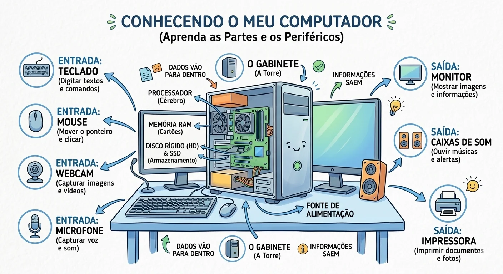

01 / PORTFÓLIO
Portfólio de projetos
Conheça trabalhos e experiências em desenvolvimento de sistemas e tecnologia.
Abrir portfólio ↗APRESENTAÇÃO PROFISSIONAL · INSTRUTORA DE INFORMÁTICA
Sou Kathleen Dias, formada em Análise e Desenvolvimento de Sistemas. Nesta página, compartilho projetos e uma proposta de aula introdutória para o curso Técnico em Informática.

Aula 01 · Fundamentos de informáticaEXPERIÊNCIA APLICADA
Exemplos de trabalhos que conectam desenvolvimento web e ensino.
Conheça trabalhos e experiências em desenvolvimento de sistemas e tecnologia.
Abrir portfólio ↗Um exemplo de material de aprendizagem desenvolvido em formato web.
Abrir curso ↗AULA DEMONSTRATIVA · NÍVEL INICIANTE
Objetivo: reconhecer as partes físicas e os programas que fazem um computador funcionar.
ATIVIDADE PRÁTICA · 5 QUESTÕES
Selecione a resposta e receba uma explicação. Não é necessário saber programar.